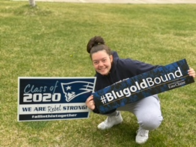

About Me
Hello! My name is Kaitlyn Wehrung and I am a student at the University of Wisconsin - Eau Claire. I will be graduating in May of 2024 with a degree in Information Systems accompanied with a minor in Management. This summer I will be starting my career at Ernst & Young in Minneapolis as a technology risk specialist. My past work experience includes:
- Teacher Assistant at the YMCA in Chippewa Falls
- Financial Anaylst with an IT emphasis for Wausau Window and Wall Systems
- Information Technology Analyst at Cargill
- Inclusion Specialist for the City of Brooklyn Park - Parks and Rec division
- Bridal Specialist at Bridal Aisle Boutique
My goals are to be a life-long learner and to stay cusrious. This is one of the main reasons I chose IT as my future career path. Technology is always changing and evolving and there will always be more to learn. My personal goals include traveling to all 50 states, and as many countries as I can.
In my free time I enjoy photography, hiking, traveling, and spending time with my family, my friends, my fiance, and our dog, Krew
Gallery
